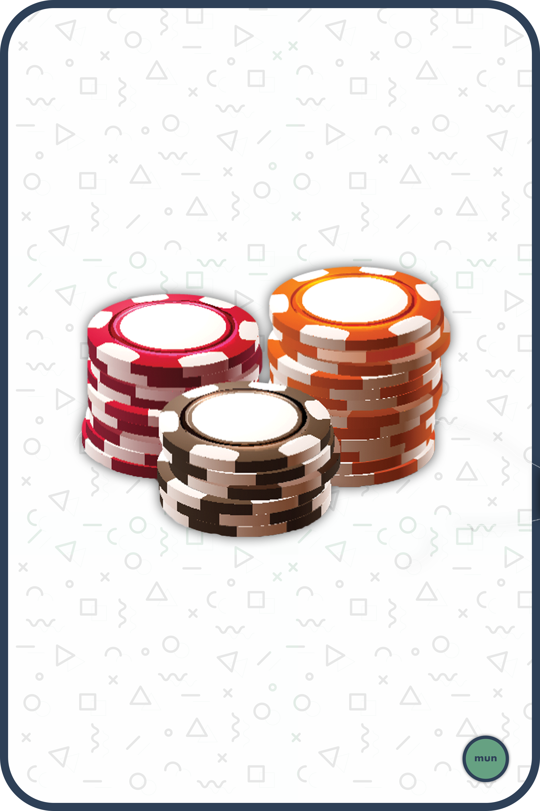
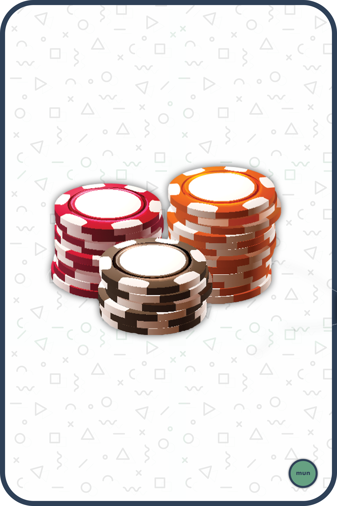

> Token Sale
The token sale event will be what we call an ILO, an Initial Liquidity Offering which is a fair system
of funds distribution.
The ETH raised will be used as follows:
-
50% will be locked for 1 year inside the Uniswap liquidity pool for the MUN / ETH pair.
-
40% will be given to team members as funders rewards.
-
10% will be stored in the public Development Treasury which will be used to pay developers,
designers, etc, to create the best dapps possible.
The ILO will run for a week ending sooner if the goal is reached. Its
purpose is to distribute tokens and create a super liquid marketcap.
A total of 50,000 MUN tokens will be sold with a goal of 1,000 ETH. The remaining 10,000 MUN will be given to the team members.
 
